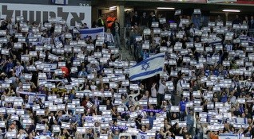

נבחרת ישראל בכדורגל מייצגת את ישראל במשחקים בינלאומיים בכדורגל מאז קום המדינה בשנת 1948. ההיסטוריה של נבחרת ישראל בכדורגל החלה עוד
בתקופת המנדט הבריטי, עם הקמת נבחרת ארץ ישראל בכדורגל, שהחלה להופיע במסגרות בינלאומיות כבר בשנת 1934.
סגל הנבחרת מורכב ממיטב הכדורגלנים המחזיקים באזרחות ישראלית. מאמן הנבחרת, שמכונה "המאמן הלאומי", הוא זה שבוחר את סגל השחקנים ומדריך
אותם לקראת המשחקים הבינלאומיים. המאמן ממונה על ידי ההתאחדות לכדורגל בישראל, הגוף המנהלי החולש על הכדורגל בישראל בכלל ועל נבחרת ישראל בפרט.
נבחרת ישראל מתמודדת בשלושה מפעלים בינלאומיים - מוקדמות גביע העולם בכדורגל ("מוקדמות המונדיאל"), מוקדמות אליפות אירופה בכדורגל ("מוקדמות היורו"),
וליגת האומות.
מאז השתתפותה במונדיאל 1970 שנערך במקסיקו, לא הצליחה נבחרת ישראל להעפיל למונדיאל או ליורו, אף שהייתה קרובה לכך פעמים אחדות. בתקופה בה
התחרתה הנבחרת במסגרת האסייתית זכתה בגביע אסיה בכדורגל בשנת 1964, הייתה פעמיים סגנית גביע אסיה, וזכתה במדליית כסף במשחקי אסיה.
משחק הבית הרשמי הראשון של נבחרת ישראל החדשה שהוקמה לאחר הקמת המדינה ב-1948 שהיה במסגרת מוקדמות מונדיאל 1950 נגד נבחרת יוגוסלביה,
אירח אצטדיון המכביה. המשחק נערך ב-18 בספטמבר 1949 והסתיים בניצחונה של יוגוסלביה בתוצאה 2–5, לעיני 20,000 צופים. לאחר מכן אירחה ישראל את
משחק הידידות מול טורקיה בניצחון המפתיע 5–1 גם הוא באצטדיון המכביה, ולראשונה אירחה באצטדיון רמת גן, שהפך לביתה הקבוע, במסגרת
משחקי מוקדמות מונדיאל 1954. היה זה ב-8 במרץ 1954, נגד נבחרת יוון, והמשחק הסתיים בניצחון היוונים בתוצאה 0–2, לעיני 55,000 צופים.
הנבחרת המשיכה לארח באצטדיון רמת גן את רוב משחקי המוקדמות הביתיים, למעט משחקי ידידות וחלק קטן ממשחק המוקדמות, שאת חלקם אירחה
באצטדיון בלומפילד לסירוגין, כ-60 שנים עד לשנת 2013. לאור ביקורות על האצטדיון ברמת גן שהפך למיושן, מנוכר ופחות ביתי עם השנים.
החל מקמפיין מוקדמות יורו 2016 משחקי הנבחרת נערכים לסירוגין באצטדיון טדי שבירושלים ובאצטדיון סמי עופר שבחיפה, החל מטורניר ליגת
האומות 2018/2019 משחקי הנבחרת נערכים גם באצטדיון טרנר שבבאר שבע, החל מטורניר ליגת האומות 2020/2021 משחקי הנבחרת נערכים גם באצטדיון
נתניה שבנתניה והחל מקמפיין מוקדמות מונדיאל 2022 משחקי הנבחרת נערכים גם באצטדיון בלומפילד שבתל אביב. כל חמשת האצטידיונים נחשבים לחדישים
וידידותיים יותר לקהל, ובעלי דירוג 4 כוכבים של UEFA.

קהל נבחרת ישראל מניף דגלים ביציע
המבקיעים בטורנירים
מונדיאל
שער אחד - מרדכי שפיגלר.
מוקדמות המונדיאל
11 שערים - ערן זהבי.
9 שערים - תומר חמד.
8 שערים - אלי אוחנה.
7 שערים - יוסי בניון.
6 שערים - אליניב ברדה, עדן בן בסט, מואנס דאבור.
5 שערים - שייע גלזר, זאהי ארמלי, משה אוננה.
4 שערים - מרדכי שפיגלר, נחום סטלמך, רוני רוזנטל, רונן חרזי, אבי נמני, עומר גולן, איציק זוהר.
3 שערים - שלמה לוי, גיורא שפיגל, בני טבק, רפעת טורק, אורי מלמיליאן, טל בנין, בן שהר, דור פרץ.
2 שערים - שייע פייגנבוים, יצחק שום, צבי רוזן, עודד מכנס, גדעון דמתי, אבי כהן, אייל ברקוביץ',
חיים רביבו, ואליד באדיר, אדורם קייסי, יניב קטן, טל בן חיים, ליאור רפאלוב, שון וייסמן, ביברס נאתכו, מנור סולומון.
שער אחד - אברהם נודלמן, יוחנן סוקניק, פרי נויפלד, בועז קופמן, שלמה נהרי, רובי יאנג, רחמים טלבי, צבי פרקש,
חיים בר, ויקי פרץ, משה סיני, משה סלקטר, ניסים כהן, ניר קלינגר, ראובן עטר, גדי ברומר, פיני בלילי, יוסי אבוקסיס, עידן טל,
שמעון גרשון, עבאס סואן, אבי יחיאל, מיכאל זנדברג, קלמי סבן, סלים טועמה, אבירם ברוכיאן, דדי בן דיין, אלון מזרחי, רמי גרשון, מאור מליקסון,
מהראן ראדי, איתי שכטר, דן איינבינדר, אלירן עטר, איתן טיבי, ניר ביטון.
2 שערים - אבי נמני, טל בנין, נג'ואן גרייב, פיני בלילי, עמרי אפק, ואליד באדיר, עמית בן שושן, טוטו תמוז, בן שהר, איתי שכטר, ניר ביטון.
שער אחד - איציק זוהר, אלון חזן, ניר סביליה, שי הולצמן, יוסי אבוקסיס, שמעון גרשון, עידן טל, ברק יצחקי, עומר גולן, בירם כיאל, טל בן-חיים,
רמי גרשון, ליאור רפאלוב, גילי ורמוט, ביברס נאתכו.
ליגת האומות
6 שערים - ערן זהבי.
שער אחד - דור פרץ, תומר חמד, דיא סבע, בירם כיאל, עילאי אלמקייס, מנור סולומון.